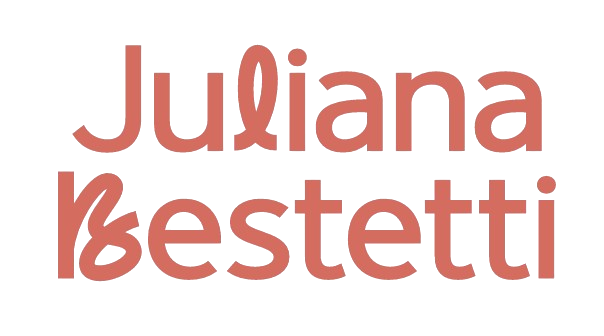
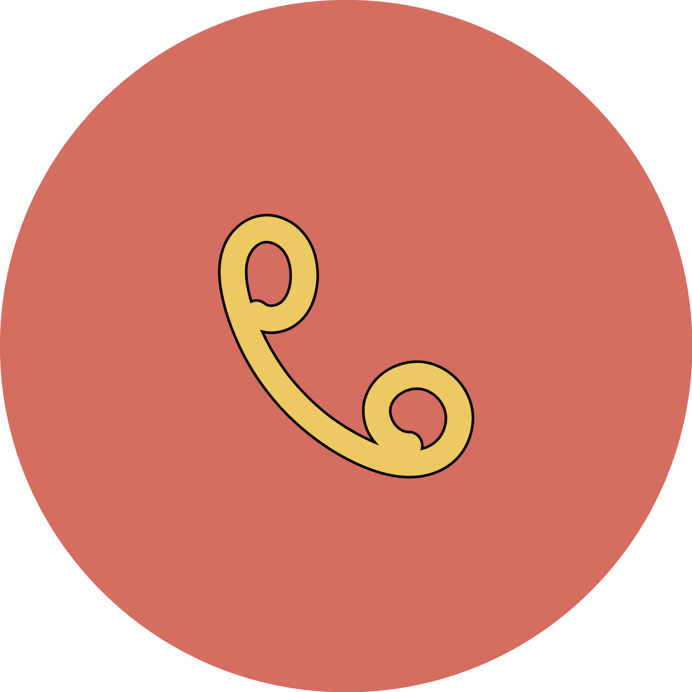
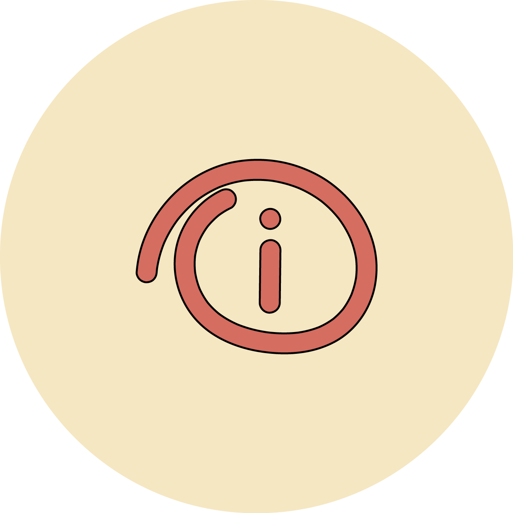
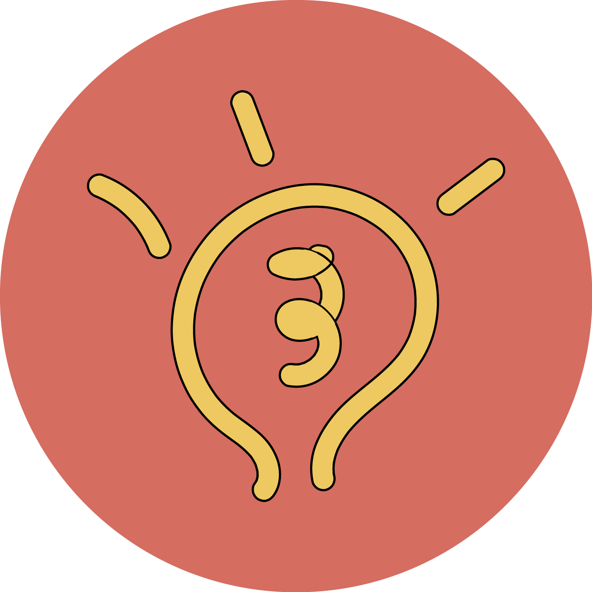

Cirurgia e Tratamento de Hemorroida
Avaliação e tratamento — clínico ou cirúrgico — conforme o grau da doença. Cada caso avaliado individualmente pela Dra. Juliana.

Sua médica Nº1 para seus problemas Nº2
Proctologista · CRM/SC 35.231

Dra. Juliana Bestetti — cirurgiã especialista em intestino, reto e ânus. Tratamento humanizado de Hemorroida e saúde íntima. Sem julgamentos, com cuidado real.
Sobre a médica
A Dra. Juliana Bestetti é médica proctologista (CRM/SC 35.231 / RQE 24136), cirurgiã especialista em intestino, reto e ânus — e acredita que ninguém deveria adiar cuidados de saúde por vergonha.
Com uma comunicação direta, empática e sem julgamentos, ela trata cada paciente como único. Seu jeito de exercer a medicina é bem resumido: "Aqui o papo é reto, literalmente."
Porque cuidar do intestino é saúde — e isso não precisa ser tabu.
Áreas de atuação
Procedimentos reconhecidos, abordagem humanizada e tecnologia atualizada para cada paciente.
Avaliação e tratamento — clínico ou cirúrgico — conforme o grau da doença. Cada caso avaliado individualmente pela Dra. Juliana.
Diagnóstico e orientação de tratamento para fissuras e fístulas anais, com abordagem clínica ou cirúrgica.
Consulta e procedimentos para saúde e estética íntima feminina, com segurança, discrição e protocolos aprovados.
Rastreamento, diagnóstico precoce e acompanhamento de condições colorretais, com foco em detecção preventiva.
Avaliação e orientação de tratamento para plicomas anais e cistos pilonidais, com abordagem individualizada.
Avaliação de doenças inflamatórias intestinais, síndrome do intestino irritável, constipação crônica e outras condições colorretais.
Processo

Entre em contato para verificar disponibilidade. Atendimento particular com organização e agilidade.
A Dra. Juliana ouve você com atenção. O papo é reto — todas as dúvidas são respondidas em linguagem clara.

Após a avaliação, as opções são apresentadas com transparência para você decidir junto com a médica.

O cuidado continua após a consulta ou procedimento, com acompanhamento da sua evolução.
Tratamento de Hemorroida
A doença hemorroidária é uma das condições colorretais mais frequentes — e muita gente adia a busca por atendimento por vergonha. Isso piora o quadro.
Existem diferentes tratamentos: de medidas clínicas a procedimentos ambulatoriais e cirurgia. A indicação correta depende sempre da avaliação médica individualizada.
Sintomas como sangramento anal, dor ou coceira podem ter várias causas. Não se autodiagnostique — busque avaliação com a Dra. Juliana para o diagnóstico correto.
Perguntas frequentes
Não. O tratamento depende do grau da doença. Casos mais leves são tratados com medidas clínicas. A cirurgia é indicada conforme a avaliação médica.
Sangramento ao evacuar, dor anal, coceira e sensação de volume. Esses sintomas podem ter outras causas — avaliação médica é essencial.
Não. Pode ser fissura, pólipo, doença inflamatória ou outras condições. Qualquer sangramento anal deve ser investigado.
Varia conforme o paciente e a técnica. A Dra. Juliana orienta cada paciente individualmente na consulta pré-operatória.
Informação em saúde
Temas como Hemorroida, fissuras e saúde íntima ainda são cercados de estigma. A Dra. Juliana acredita que informação de qualidade é parte essencial do cuidado — e que ninguém deveria deixar de buscar ajuda por vergonha.
⚠️ As informações deste site têm caráter educativo e não substituem a consulta médica presencial. Para diagnóstico e tratamento, agende sua avaliação.
Depoimentos de pacientes
Depoimentos publicados com autorização expressa. Resultados individuais variam conforme cada caso clínico.
★★★★★
"Sofri com Hemorroida por anos sem coragem de buscar ajuda. A Dra. Juliana me recebeu com leveza e me deixou à vontade. Me senti muito bem cuidada."
★★★★★
"Finalmente uma médica que fala de saúde íntima sem me fazer sentir constrangida. Profissional e acolhedora ao mesmo tempo. Recomendo!"
★★★★★
"Muito satisfeita com o atendimento. A Dra. Juliana explicou tudo com clareza e me deixou segura para tomar as melhores decisões sobre minha saúde."
*Iniciais para preservar privacidade. Publicados com autorização.
Agende sua consulta
Dê o primeiro passo. Agende com a Dra. Juliana Bestetti e receba uma avaliação médica individualizada, com orientações claras e sem julgamentos.